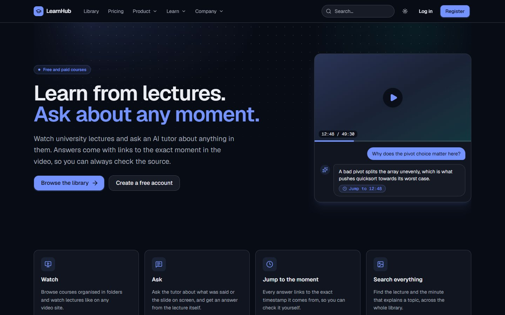

LearnHub
Watch lectures and ask an AI tutor about any moment. Every answer links back to the exact timestamp in the video.
- Type
- AI-powered course platform
- Role
- Design & development
- Backend
- Python, FastAPI
- Data
- PostgreSQL with pgvector, Neo4j
- AI
- Retrieval (RAG), BGE-M3 embeddings, LiteLLM
- Hosting
- Vercel, Docker, Hugging Face
- Status
- Live

Visit live site ↗Screenshot of the live site. Click it to open the real thing.
The problem & the solution
Problem. Long video lectures are hard to search. When something is unclear, learners scrub back and forth or leave the video to look for an explanation elsewhere.
Solution. LearnHub lets people watch lectures like on a video site and ask a tutor about what was said or shown on a slide. The answer comes from the lecture itself and links to the exact minute, so it can be checked.
Lectures are shown under their original licences, for example MIT 6.0001 from MIT OpenCourseWare.
Highlights
- Courses organised in folders, with free and paid options
- Ask the tutor about any moment in a lecture
- Answers link to the source timestamp
- Search across the whole library for the minute that explains a topic
- Docker Compose setup and automated tests
Built for learners and course owners
Learning
- Library to browse courses and lectures
- Video player with timestamp jumps
- A "my learning" page for your courses
- Pricing and free courses
AI tutor
- Questions about speech or on-screen slides
- Answers drawn from the lecture content
- Source timestamp with every answer
- Search across all lectures
Ingestion pipeline
- Lecture content turned into searchable chunks, with OCR for slides
- Embeddings stored in PostgreSQL with pgvector
- Neo4j for relationships between content
- Deployable with Docker Compose or Hugging Face
What it's built with
Need an AI-powered product?
I build tools that answer from your own content, with sources, so people can trust what they read.
Discuss your project →